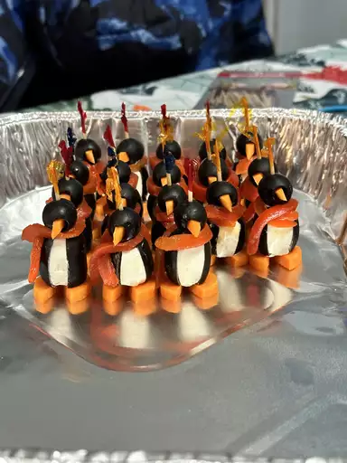

Cream Cheese Penguins

Description
We all love penguins. We all love food. Why not have both?
With this easy recipe, you can create a deliciously edible
display of cute penguins with ease. Give them scarves or hats
with little strips of peppers or pimentos!
Ingredients
- Black olives:18 large; pitted and 18 small (36)
- Cream cheese: 1 (8 ounce) package; softened
- Carrot:1 large
Steps
- Cut a slit from top to bottom, lengthwise, into the side
of each jumbo olive. Carefully insert about 1 teaspoon of
cream cheese into each olive. Slice the carrot into eighteen
1/4 inch thick rounds; cut a small notch out of each carrot
slice to form feet. Save the cut out piece and press into
center of small olive to form the beak. If necessary cut
a small slit into each olive before inserting the beak.
- Set a big olive, large hole side down, onto a carrot
slice. Then, set a small olive onto the large olive,
adjusting so that the beak, cream cheese chest and
notch in the carrot slice line up. Secure with a
toothpick.